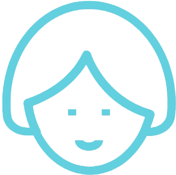
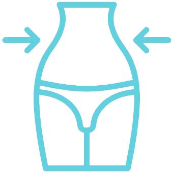
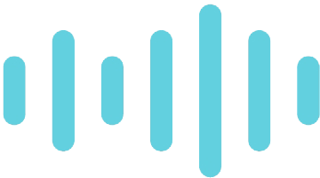
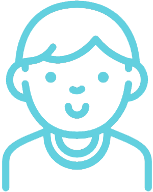
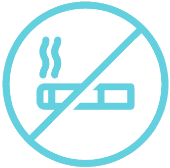

ЭТОТ КУРС - ЗНАКОМСТВО, ВАШИ ПЕРВЫЕ ШАГИ В ЙОГЕ
Тело - это проводник, храм души, который мы не используем даже на половину тех возможностей, которыми оно обладает. Расширяя границы своих физических возможностей, на пути йоги мы расширяем границы сознания
Йога - это единение ума, души и тела, и только объединив эти три составляющие воедино, мы осознаем себя, мы начинаем ощущать, что в самом деле есть гармония, целостность, осознанность и настоящая жизнь
ЗАНЯТИЯ ВКЛЮЧАЮТ В СЕБЯ
- Асаны
- Улучшения
- Медитации
- Бонусы
Для улучшение осанки

Практикуя эти несложные асаны, вы сможете исправить осанку и избавиться от боли в шее и пояснице
Для раскрытия тазобедренных суставов

Увеличить гибкость и подвижность помогут упражнения для растяжки тазобедренных суставов
Для гибкости и растяжения тела

Последовательность асан на раскрытие тазобедренных суставов необходима практически всем йогинам
Для улучшение осанки

Практикуя эти несложные асаны, вы сможете исправить осанку и избавиться от боли в шее и пояснице
Для раскрытия тазобедренных суставов
Увеличить гибкость и подвижность помогут упражнения для растяжки тазобедренных суставов
Для гибкости и растяжения тела
Последовательность асан на раскрытие тазобедренных суставов необходима практически всем йогинам
Для улучшение осанки
Практикуя эти несложные асаны, вы сможете исправить осанку и избавиться от боли в шее и пояснице
Для раскрытия тазобедренных суставов
Увеличить гибкость и подвижность помогут упражнения для растяжки тазобедренных суставов
Для гибкости и растяжения тела
Последовательность асан на раскрытие тазобедренных суставов необходима практически всем йогинам
Для улучшение осанки
Практикуя эти несложные асаны, вы сможете исправить осанку и избавиться от боли в шее и пояснице
Для раскрытия тазобедренных суставов
Увеличить гибкость и подвижность помогут упражнения для растяжки тазобедренных суставов
Для гибкости и растяжения тела
Последовательность асан на раскрытие тазобедренных суставов необходима практически всем йогинам
ЙОГА ДЛЯ НАЧИНАЮЩИХ
Мы предлагаем бесплатное вводное видео для всех, кто хочет начать заниматься йогой, но боится, что у него нет для этого таланта.
ТАРИФЫ
БАЗОВЫЙ
5 видео-уроков с подробным объяснением выполнения асан
- полезная информация о йоге и пользе практик
- медитациик
- техники релаксации
- доступ к курсу предоставляется на 1 месяц
ПРОДВИНУТЫЙ
11 видео-уроков с подробным объяснением выполнения асан
- полезная информация о йоге и пользе практик
- медитациик
- техники релаксации
- обратная связь от наставника
- советы по питанию
- доступ к курсу предоставляется на 4 месяца
Регистрация на курс
СТАНЬ ЛУЧШЕ
Если вы хотите улучшить свое тело и здоровье, но не знаете с чего начать - свяжитесь с нами